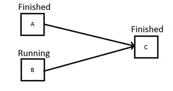
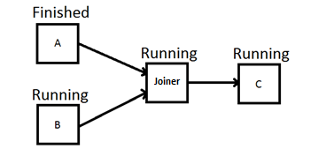

Joiner Component Usage
Synopsis
The Joiner Component is used to join multiple outputs to one.
Rationale
It is not possible to have two different outputs share one input. The reason for this is, that if one of the outputs is finished and closed, the input will be closed as well and tough not read any input from the second output any more. If the component from the second output is not yet finished, the workflow does not finish correctly. The problem is visualized in this figure:

Component C finishes as soon as A is finished.The Joiner Component solves this problem, letting two outputs join together to one input but it will only finish, if both outputs are closed.
Component C will finish when A and B are finished.Usage
Using the Joiner is very simple. In the Inputs/Outputs configuration tab, you have to choose the type of the inputs (note that all inputs have the same type) and the number of inputs you want to join.

After that, you have all chosen inputs in the connection editor and just one output for the Joiner component. These you can connect as you want it.